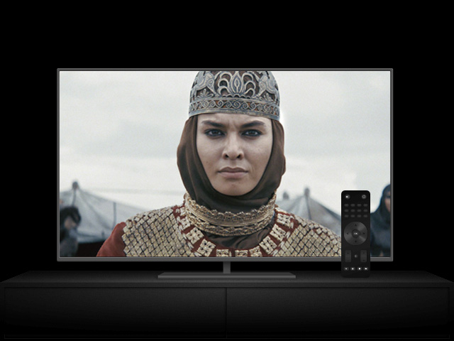
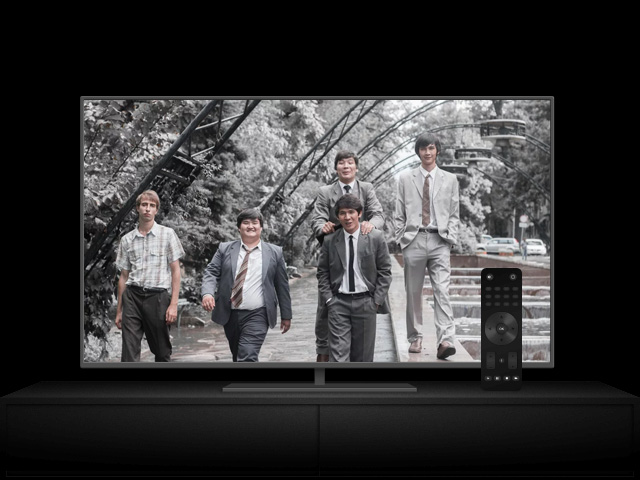
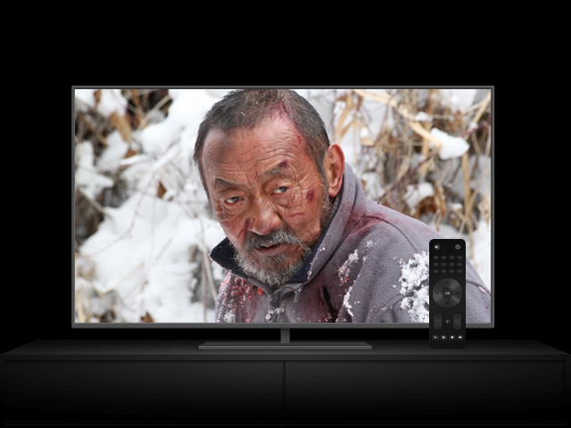
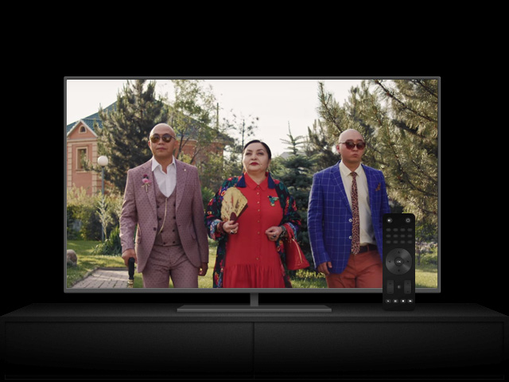

1 PLACE

TOMIRIS
Based on historical heroine Queen Tomiris of Massagetae and her cadre of female warriors, The Legend of Tomiris recounts the tale of the nomadic ruler who overcame great personal tragedy to repel the powerful Persian empire and unite the Great Steppe.
WATCH
2 PLACE

DISTRICTS
Moving to a new school, the teenager falls into the criminal underground.
Powerful social drama about Kazakhstan in the 1980s.
WATCH
3 PLACE
KUDALAR
A story about matchmakers from Astana and Shymkent, whose children decided to
get married. The first - Jeannette and Tolik - thought their daughter would
marry the minister's son, the second - that their son would bring a daughter-
in-law, who knows all the customs and traditions, into the house. Preparing
for the wedding can turn into a serious war between matchmakers.
WATCH
4 PLACE

SHAL
The great steppe morality about the need to do good and
not wait for gratitude in return, about the unhurried and
unhurried flow of time without thirst for profit and
wealth, about unpretentiousness and self-sufficiency,
about the inextricable connection with the legendary
nomadic past of it's current heirs.
WATCH
5 PLACE

GROOM
In the center of the plot is a young guy Timur. He lives
in a rented apartment in Almaty with his best friend
Bolik and works for a large advertising agency.Timur
has a colleague - a cheerful and adventurous girl
Aliya. Her fiancé Samat recently proposed to her
and thereby angered her father by not asking
him for permission to marry before. Aliya
decided to rectify the situation and introduce
the groom to her parents for a long weekend so
that they could get to know each other properly.